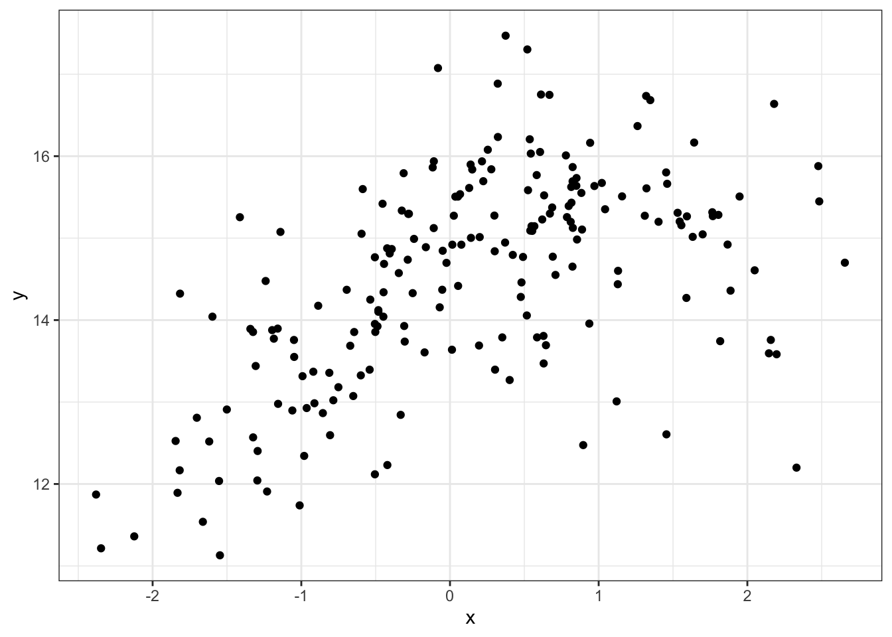
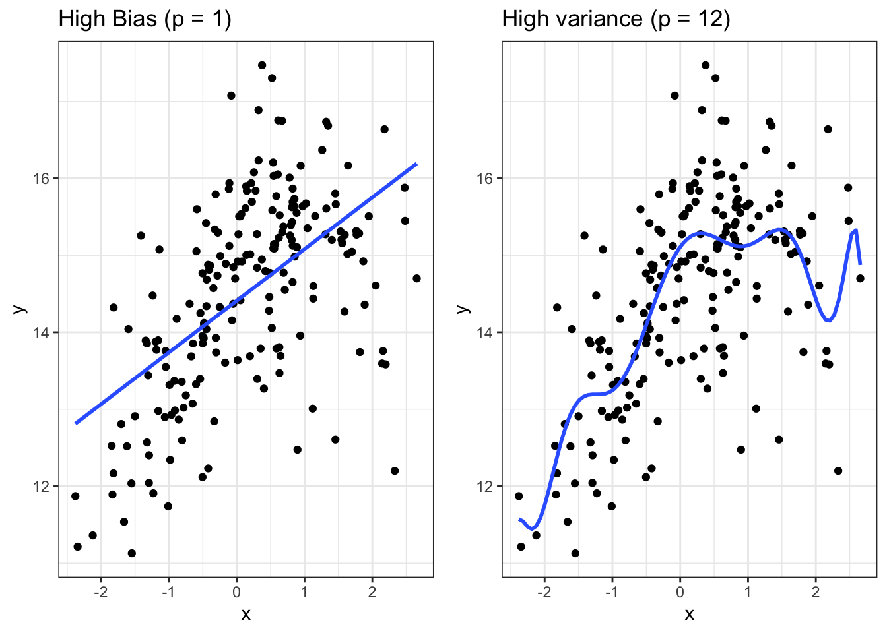

library(learnr) # For interactive exercisesStats 5100: Model Selection
Set up
For today’s lecture I will use the R package learnr. If you would like to follow along interactively, you can download this file from my website: jeswheel.github.io.
If you “run” the document in R-Studio, it will download the learnr package for you.
Logistics
- Any questions about previous material?
Introduction
Review
We are interested in fitting a linear regression model of the form:
\[ y_i = \beta_0 + \beta_1x_{1, i} + \ldots + \beta_{p-1}x_{p-1, i} + \beta_px_{p, i} + \epsilon_i, \] Where \(\epsilon_i\) for all \(i = 1, 2, \ldots, n\) are i.i.d. random noise terms with mean zero \(\big(\text{E}[\epsilon_i] = 0\big)\) and variance \(\sigma^2\) \(\big(\text{Var}(\epsilon_i) = \sigma^2\big)\).
- In this current setup, there are \(n\) observations and \(p\) variables.
Model Selection
In real data analysis situations, people often have data for a response variable (\(\mathbf{y}\)) and many possible regressors (\(\{\mathbf{x_i}\}_{i = 1}^p\)).
Instead of fitting a model that describes the response variable using every available regressor, we are often interested in fitting a model to only a subset of the variables \(\{\mathbf{x_i}\}_{i = 1}^p\).
For example, suppose that \(p = 20\) and we only want to include variables \(\mathbf{x}_{2}, \mathbf{x}_{10}\), and \(\mathbf{x}_{13}\):
\[ y_i = \beta_0 + \beta_2x_{2, i} + \beta_{10}x_{10, i} + \beta_{13}x_{13, i} + \epsilon_i, \]
Question
What are some reasons that we might want to fit a model to only a subset of predictors?
Some Possible reasons:
- Overfitting
- When a model includes too many predictors, it can capture noise rather than the underlying relationship in the data.
- Multicollinearity
- Including highly correlated predictors can make it difficult to discern the individual effect of each predictor.
- Interpretability
- Models with many predictors can be difficult to describe to stakeholders; models with fewer variables can be more easily understood (and trusted) by non-statistical audiences.
- This is a recurring theme in statistics, sometimes called parsimony: the simplest model that adequately describes the data is preferred (Occam’s Razor).
- Cost and Feasibility
- The model may be used to make predictions about newly obtained data, or motivate the collection of new data for future studies. If it is expensive / inconvenient to collect variables, it’s good to know which subset might be most important to collect.
What we will cover today
Today I hope to show give some examples demonstrating why we might want to do model selection, and common techniques used to select the subset model.
There will be some interactive exercises, so if you would like to participate and you’re having any trouble accessing this document, now is the time to let me know.
Overfitting
Statistical Bias
Suppose we are interested in an estimate of \(\mathbf{\beta}\), which we denote \(\hat{\mathbf{\beta}}\).
We would hope that the expected value of our estimate would be equal to the thing we are estimating:
\[ \text{E}[\hat{\mathbf{\beta}}] = \beta \hspace{4mm} \text{ or equivalently,} \hspace{4mm} 0 = \text{E}[\hat{\mathbf{\beta}}] - \beta \] The difference \(b = \text{E}[\hat{\mathbf{\beta}}] - \beta\) is known as the bias of an estimate.
- The bias can be thought of as an consistent error (for example, under or over estimation), and is often the result of having a model that is too simple.
Variance of an estimator
Using this same notation, the variance of the estimator is defined as: \(\text{Var}(\hat{\mathbf{\beta}})\).
- In this context, we think of this variance as how much our parameter estimates change if there are small changes in the training data. Large variance is often a result of having a model that is too complex.
Bias-Variance tradeoff
- As the number of parameters of a model increase (i.e., more model complexity), the model can better fit the data, reducing bias.
- However, larger models have increased variance, as every time we obtain a different sample the model fit will change.
For regression models, it can be shown that the total expected error is the sum of the variance of your estimator and the squared bias:
\[ \text{Expected error} = \text{Var}(\hat{\mathbf{\beta}}) + \big(\text{E}[\hat{\mathbf{\beta}}] - \beta\big)^2 \] Because our goal is to minimize the total error, we want to find a model that balances this bias-variance tradeoff: Bias-variance figure 1, Bias-variance figure 2.
{kind=link}
Example
Suppose that I have a response variable \(y\) and only a single predictor variable \(x\) that have a non-linear relationship:
\[ y_i = f(x_i) + \epsilon_i \]
I have simulated such as example in R, saved into an object called df_poly.

If I don’t know what this relationship is, I might consider fitting a polynomial regression model:
\[ y_i = \beta_0 + \beta_1 x_1 + \beta_2 x_2^2 + \ldots + \beta_px_p^p + \epsilon_p \] The question remains: how many variables should I fit to the data?

Exercise: Fitting polynomial regression
Try finding a value of \(p\) that provides a suitable fit to the data in df_poly.
To fit a polynomial regression model in R, we need to use the following for our formulas:
lm(Y~X + I(X^2) + ... + I(X^p), data = df_poly)Here the function \(I()\) tells R to interpret X^2 as the square of X.
head(df_poly) x y
1 0.5855288 13.78895
2 0.7094660 14.55087
3 -0.1093033 15.12250
4 -0.4534972 15.41938
5 0.6058875 16.05119
6 -1.8179560 12.16711# You can fit a 2-degree polynomial regression model using:
poly_fit <- lm(Y~x+I(x^2), data = df_poly)
# To get a diagnostic summary, try plotting the output:
plot(poly_fit)
# Or take a summary:
summary(poly_fit)# You can easily plot your fit using ggplot:
ggplot(data = df_poly, aes(x = x, y = y)) +
geom_point() +
geom_smooth(
method = 'lm',
formula = y ~ x + I(x^2)
)
# In this case, I'm plotting a 2-degree polynomial.
# The only thing you need to change is to plug in the formula that you would like to plot. Question:
Previously, we have discussed methods of assessing the goodness-of-fit of any given regression model (for example, \(\text{R}^2\), MSE and visual checks of residuals).
Problem: if we use these evaluations on the data we use to fit the model, they will always suggest using a larger model.
Question: What do you think we might try in order to perform model selection?
Model Selection Methods
- A statistical test of significance (ANOVA).
- Consider adding a penalty to model diagnostics.
Statistical Testing
We can actually perform a statistical test comparing a larger model to a nested version of the model.
For instance, consider the base model with four variables (which we call \(M_1\)):
\[ y_i = \beta_0 + \beta_1x_{1, i} + \beta_2x_{2, i} + \beta_3x_{3, i} + \beta_4x_{4, i} + \epsilon_i, \] and we would like to compare this to a smaller nested model (which we call \(M_0\)): \[ y_i = \beta_0 + \beta_2x_{2, i} + \beta_3x_{3, i} + \epsilon_i, \]
This smaller model is considered nested because it’s actually the same model, just setting \(\beta_1 = \beta_4 = 0\).
(Here I have chosen variables and coefficients corresponding to the indices \(2, 3\) as an example, but this works for arbitrary numbers of original variables \(p\) and subset sizes).
- We can calculate an F-test statistic by considering the ratio: \[ F = \frac{\Delta\text{SSE}/\Delta p}{\text{MSE}_1}, \] where \(\Delta\text{SSE} = \text{SSE}_0 - \text{SSE}_1\), and \(\Delta p\) is the difference in the number of model parameters (i.e., the number of coefficients being tested).
Advantages
- Simplicity
- Formal Hypothesis testing framework
- Easy to implement
Disadvantages
- Can be too conservative
- We only pick the larger model if we reject the null hypothesis. The test is designed to control type I errors, meaning we want to limit number of times we reject if the null is true (leading to fewer rejections and selecting simple models).
- Issues with multiple-testing
- If we want to do this test for multiple nested models, we run into a multiple-testing issue, which means we may not be controlling the type-I error rate.
- Assumes normally distributed error terms.
Implementation in R
In R, there are various ways you can do this type of test, but an easy way is using the anova function. This is demonstrated below on the mtcars dataset, which contains data about cars in the 1970’s:
summary(mtcars)ggplot(mtcars, aes(x = wt, y = mpg)) +
geom_point() +
labs(x = "Car Weight (1000 lbs)", y = "Miles/Gallon")There seems to be a strong correlation between the weight of a car (wt) and its gas mileage (mpg). We can test this model against and alternative that includes additional variables:
# Fit the full model
full_model <- lm(mpg ~ wt + hp + qsec + disp + drat, data = mtcars)
# Fit the reduced model (nested within the full model)
reduced_model <- lm(mpg ~ wt, data = mtcars)
anova(reduced_model, full_model)Adjusting model diagnostics
Another approach is to adjust model diagnostics by adding a penalty for larger models.
Adjusted \(R^2\)
One example is to penalize the \(\text{R}^2\) statistic. Recall that \(\text{R}^2\) represents the proportion of variation in the data that can be explained by the model.
- \(\text{R}^2\) can be written as: \[ R^2 = 1 - \frac{\text{SS}_{\text{error}}}{\text{SS}_{\text{total}}} \]
- The adjusted \(\text{R}^2\) is: \[ R_{\text{adj}}^2 = 1 - \frac{\text{SS}_{\text{error}}/(n-p)}{\text{SS}_{\text{total}}/(n-1)} = 1 - \frac{(1 - \text{R}^2)(n - 1)}{n - p - 1} \]
While \(\text{R}^2\) always increases when extra variables are added to the model, adjusted \(\text{R}^2\) only increases when the improvement in \(\text{R}^2\) (due to the inclusion of a new variable) is more than one would expect to see by chance.
In R, the adjusted \(\text{R}^2\) statistic can be obtained by summarizing an lm object:
car_mod <- lm(mpg~cyl+disp+hp+wt, data = mtcars)
summary(car_mod)AIC
The log-likelihood of a model is a useful comparison tool; a model with a higher log-likelihood describes the available data better than a model with lower log-likelihood.
Like \(\text{R}^2\), the log-likelihood does not account for model complexity, and therefore adding new variables into the model will always increase the log-likelihood.
- Akaike’s information criterion (AIC) adjusted the log-likelihood by adding a penalty for the number of variables used. \[ \text{AIC} = 2p - 2 \times \text{log-likelihood} \]
- Given a set of candidate models, the preferred model is the one with the smallest AIC.
AIC was first developed in the case where models parameters are estimated by maximum likelihood estimation (i.e., finding parameter values that have the highest log-likelihood). If the model was fit in this way, then the AIC has some interesting theoretical properties.
In R, the AIC statistic can be obtained by using the AIC function on an lm object:
car_mod1 <- lm(mpg~cyl+disp+hp+wt, data = mtcars)
car_mod2 <- lm(mpg~hp+wt, data = mtcars)
AIC(car_mod1)
AIC(car_mod2)Additional diagnostics
There are various other diagnostic statistics that we might use to compare models.
- Approaches that adjust for model complexity: adjusted \(\text{R}^2\), AIC, AICC, BIC, Mallow’s \(C_p\).
- There are also approaches that do not adjust for model complexity, such as the MSE.
Question: How do we know which to use?
Testing multiple model variations
Stepwise regression
So far we have only discussed approaches for comparing two candidate models. In order to find an optimal subset of variables to use in a model, we could fit all possible models using a subset of the available predictor variables.
Suppose we have \(p\) predictor variables available. Then the total number of candidate models is \(2^p\). Even with a relatively small number \(p = 20\), this would require fitting more than one million models!
To find a suitable subset model, we will focus on stepwise regression techniques. These approaches are greedy algorithms (a greedy algorithm won’t necessarily give us the “best” answer, but will give an answer based on locally optimal solutions).
These algorithms include forward selection, backward elimination, and bidirectional elimination (aka forward-backward elimination).
Forward Selection
- Start with a model with no variables.
- Evaluate the effect of adding each remaining candidate variable (one at a time) to the current model.
- Add the variable that most improves the model according to the chosen criterion (e.g., decreases AIC/BIC the most, increases adjusted R-squared the most, etc.).
- Repeat until no variables improve the model based on our criterion.
Backwards Elimination
- Start with all variables.
- Test the removal of each variable using the chosen criterion, and remove a variable if the criterion improves with the removal of the variable.
- Repeat this process until no further variables can be removed without a reduction in the selected criterion.
Bidirectional elimination (forward-backward)
- Combination of both forward and backward elimination.
- Start with a candidate model (often either intercept only, or all variables).
- If possible, do a forward step by considering to add a single variable (one at a time) to the current model.
- After adding a variable, evaluate the effect of removing each variable (one at a time) from the current model (if possible).
- Continue this process until no more variables can be added or removed to improve the model further.
If you want to use AIC as the criterion, each of these approaches can be implemented in R with the step function.
Exercise: Try using the step function in R to select a model for the mtcars dataset.
null_model <- lm(mpg ~ 1, data = mtcars)
full_model <- lm(mpg ~ ., data = mtcars)
step(full_model, direction = 'backward')# To go forward, you need to provide a "Scope"
# The scope basically is the largest model you want it to consider:
scope = list(upper = full_model)# To do bidirectional, you need scope to have a lower and an upper
scope = list(upper = full_model, lower = null_model)#### SOLUTION ####
# Backwards
step(full_model, direction = 'backward')
# Forwards
step(
full_model, direction = 'forward',
scope = list(upper = full_model)
)
# Forward-Backward
step(
null_model, direction = 'both',
scope = list(upper = full_model, lower = null_model)
)
# Backward-Forward
step(
full_model, direction = 'both',
scope = list(upper = full_model, lower = null_model)
)Cross validation
When we fit a model to data, we are typically interested in how well our fitted model generalized to new datasets.
Unfortunately, we usually can’t directly assess how well the model generalizes because we don’t have new data.
Testing data
In an ideal scenario, we can have two distinct datasets. We will use one for training (call it the training data), and another for testing (call it the testing data).
To see why this is useful, let’s revisit the polynomial regression example. We start with the same 200 observations that we had before, but now let’s assume I have a second dataset from the same data generating process that has 1000 observations (saved as df_poly_test).
We can now consider how many polynomial regression variables should be included in our model based on how well the model fits the test data. We will measure goodness-of-fit in this case using RMSE.
# Function to evaluate MSE of model predictions
MSE <- function(Y, Y_hat) {
mean((Y - Y_hat)^2)
}
# Set the maximum degree of the polynomial model
max_p <- 7
# Create a data.frame object to save results of training data
results_train <- data.frame(
degree = 1:max_p,
MSE = NA_real_,
set = 'train'
)
# Create a data.frame object to save results of testing data
results_test <- data.frame(
degree = 1:max_p,
MSE = NA_real_,
set = 'test'
)
# For each p in 1:max_p, fit a polynomial model of degree p, and calculate
# the MSE on the training and testing data.
for (p in 1:max_p) {
# Fit model on training data
poly_model <- lm(y~poly(x, p), data = df_poly)
# Make Y predictions on training data
train_predictions <- predict(poly_model, newdata = df_poly)
# Make Y predictions on testing data
test_predictions <- predict(poly_model, newdata = df_poly_test)
# Calculate MSE and save the results
results_train[p, 'MSE'] <- MSE(df_poly$y, train_predictions)
results_test[p, 'MSE'] <- MSE(df_poly_test$y, test_predictions)
}
# Combine results into a single data.frame object
results <- dplyr::bind_rows(
results_train, results_test
)
# Plot the results
ggplot(results, aes(x = degree, y = MSE, col = set)) +
geom_line(aes(y = MSE)) +
xlab("Polynomial Degree")Note that testing works best if you have a lot a data that you can use for testing.
Data Splitting
In the absence of a new dataset we can test on, we have to figure something else out.
If we have a large amount of data, one idea is to split the data into two parts: one for training, and one for testing.
We don’t necessarily have to split the data evenly. For example, it’s common to see a split of 80/20, where \(80\%\) of the data are used for training.
If there is a lot of data available, then the test set provide a representative sample of how the model performs on unseen data.
Question: How is this different from just having two separate datasets? Why might the this cause a disadvantage?
Question: What could we try if we don’t have a lot of data?
\(K\)-fold cross-validation
A sampling procedure that reuses a limited data sample to evaluate model predictive performance.
In a \(K\)-fold cross validation (CV):
- Divide the data sample (evenly) into \(K\) sets (folds).
- In each fold, use (\(K - 1\)) sets for model fitting (i.e. training), and the remaining set for evaluating model prediction (i.e., testing).
- Repeat the above step \(K\) times, rotating the training and test sets.
- Evaluate the overall performance by averaging the results across folds.
Here is a visual representation of \(5\)-fold cross validation.
{kind=link}
Interactive Exercise
You have just learned about K-Fold Cross Validation in our previous class. Now, you will apply this technique to the mtcars dataset in R to evaluate the performance of a linear regression model for the variable mpg.
You can pick any regressors you would like, but a good starting point might be the formula: mpg ~ disp + hp + wt.
Steps:
- Shuffle the dataset. Randomly shuffle the rows of the dataset.
- Split the dataset into K folds. For this task, let K = 5.
- Perform K-fold cross-validation.
- For each fold, fit a linear regression model on the training data (i.e., all folds except the current fold).
- Evaluate the model’s performance on the test data (i.e., the current fold).
- Record the prediction error for each fold. Use Mean Squared Error (MSE) as the metric.
- Calculate the average prediction error across all K folds.
Implement this procedure from scratch using R. There are multiple ways you could do this, so the provided hints demonstrate only one possible approach.
set.seed(1) # for reproducibility
head(mtcars) mpg cyl disp hp drat wt qsec vs am gear carb
Mazda RX4 21.0 6 160 110 3.90 2.620 16.46 0 1 4 4
Mazda RX4 Wag 21.0 6 160 110 3.90 2.875 17.02 0 1 4 4
Datsun 710 22.8 4 108 93 3.85 2.320 18.61 1 1 4 1
Hornet 4 Drive 21.4 6 258 110 3.08 3.215 19.44 1 0 3 1
Hornet Sportabout 18.7 8 360 175 3.15 3.440 17.02 0 0 3 2
Valiant 18.1 6 225 105 2.76 3.460 20.22 1 0 3 1# First we want to shuffle the data. Why?
# Sometimes there may be some features of the data recording process so that
# data that are close to each other in the dataset may be more closely related
# than those that are further apart. We want to avoid this in our evaluations.
set.seed(1)
df_cars <- mtcars[sample(1:nrow(mtcars)), ]# Setting up the k-folds.
# The number of observations cannot be evenly split into 5 folds. You need
# to account for this somehow.
# One possible approach:
# (7 observations in folds 1 & 2, 6 observations in all other folds)
folds <- rep(c(1, 2, 3, 4, 5), length.out = nrow(df_cars))# You may need to do the following:
# Set up a vector to save the results for each fold:
mse_results <- c()
# Create a for-loop over the number of folds:
for (k in 1:5) {
# ...
}
# Within the for-loop, get training and testing sets for current value of k.
# Here's how you might get the test set if k == 1:
is_test_set <- folds == 1
df_test <- df_cars[is_test_set, ]
### How can you extend this for all k, and to both train and test sets?
# You also need to fit the model, evaluate, and save results within the loop.
# For example:
mod_k <- lm(mpg ~ disp + hp + wt, data = df_train)
predict_k <- predict(mod_k, newdata = df_test)
mse_k <- mean((predict_k - df_test$mpg)^2)
mse_results <- c(mse_results, mse_k)
Comments on CV
Some relative terminology includes: